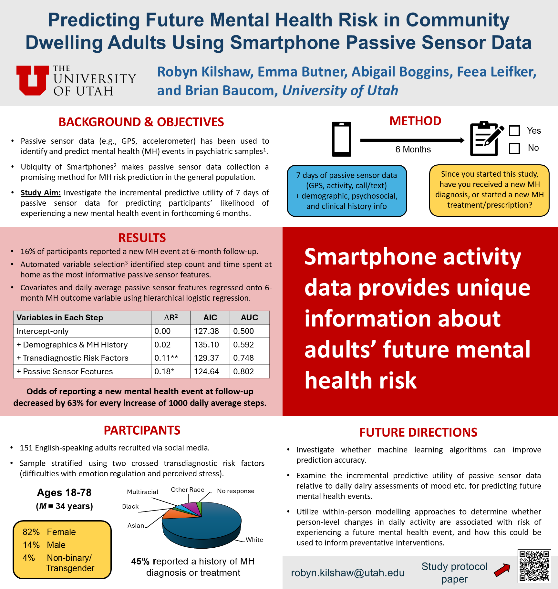
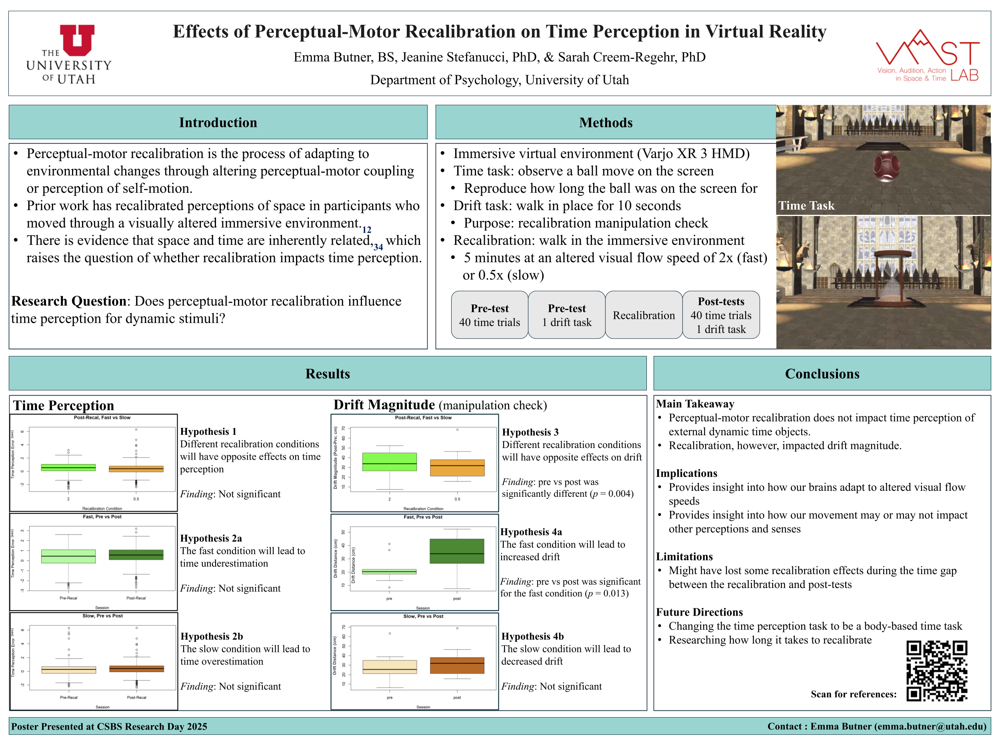
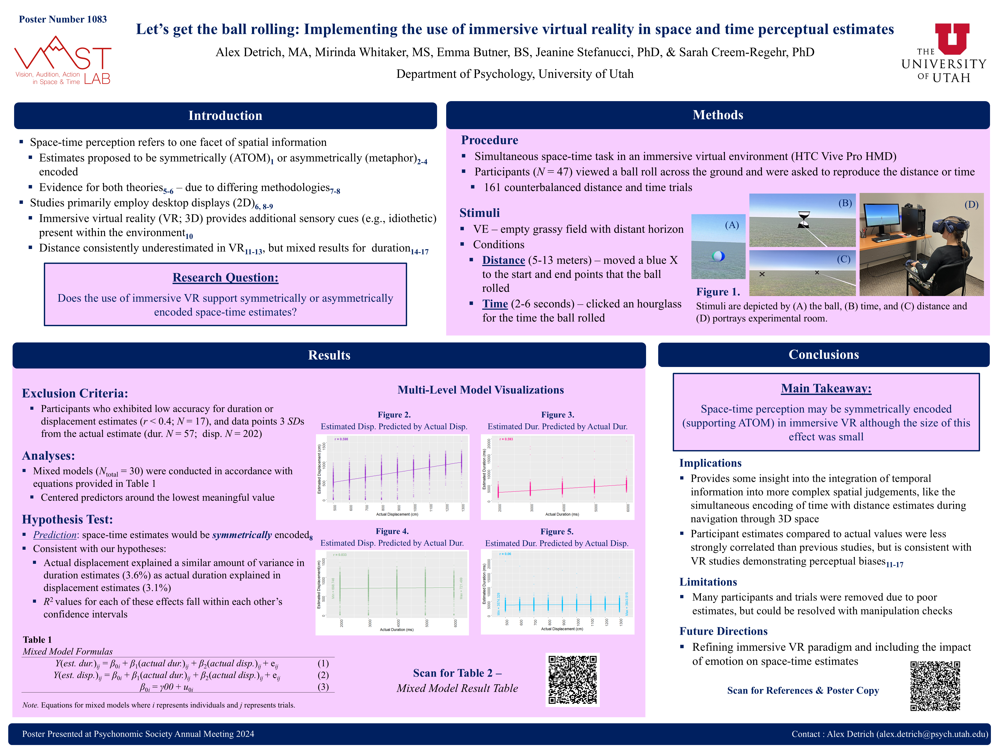
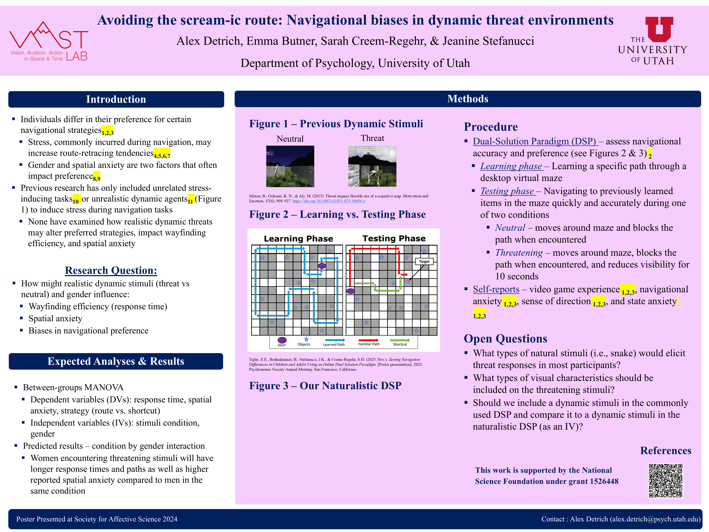

Published Papers
View on Google Scholar(2024)
Benchmarking Mental Health Status Using Passive Sensor Data: Protocol for a Prospective Observational Study.
JMIR Research Protocols, 13(1), e53857.
Click to see the abstract.
In Preparation
(in preparation)
Let's get the ball rolling: Implementing the use of immersive virtual reality in space and time perceptual estimates.
(in preparation)
Conventional content analysis of Housing First residents' preferred activities and service needs during the COVID-19 pandemic.
Conference Posters
+ indicates presenting author

Investigating the Utility of Smartphone Passive Sensor Data for Predicting Mental Health Risk in Community Dwelling Adults
ABCT Technology and Behavior Change SIG
May 2025

Effects of Perceptual-Motor Recalibration on Time Perception in Virtual Reality
University of Utah Research Day
April 2025

Let's get the ball rolling: Implementing immersive VR in space and time perceptual estimates
University of Utah Research Day
April 2025

Let's get the ball rolling: Implementing immersive VR in space and time perceptual estimates
Psychonomic Society
November 2024

Using Passive Sensor Data to Enhance Mental Health Risk Assessment in Community-Dwelling Adults
APS Annual Convention
May 2024

Avoiding the scream-ic route: navigational biases in dynamic threat environments
Society for Affective Science
March 2024

Emotional Correlations During Observation of a Traumatic Event
UW Undergraduate Research Symposium
May 2023

Emotion Correlations Underlying an Adverse Event
Western Psychological Association
April 2023